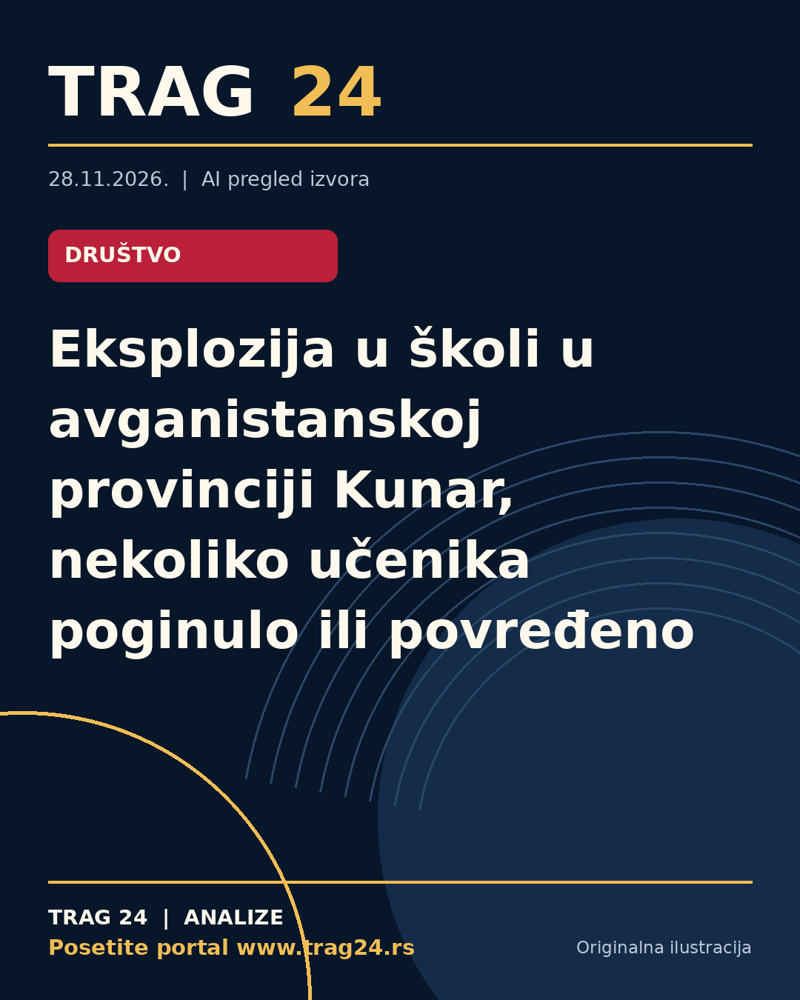

Eksplozija u školi u avganistanskoj provinciji Kunar, nekoliko učenika poginulo ili povređeno

ŠTA SE DOGODILO
U školi u istočnoj avganistanskoj provinciji Kunar dogodila se eksplozija u kojoj je kako je saopštila lokalna policija, stradalo ili povređeno više učenika. Eksplozija se desila u oblasti Andar Ser, na granici sa Pakistanom, u 10 časova po lokalnom vremenu.
HRONOLOGIJA
O eksploziji se izveštava u jutarnjim satima, a policija iz provincije Kunar je odmah poslata na lice mesta kako bi sprovela istragu. Podseća se da je u avgustu u napadu ručnom bombom na školski kompleks u Kabulu nastradalo ili povređeno više od 40 dece.
ŠTA NAVODE IZVORI
Lokalni policijski portparol je potvrdio da su u eksploziji poginulo ili ranjeno više učenika, dok neprecizni izrazi kao što su 'nekoliko' i 'više' ukazuju na neodređen broj žrtava. Istražni timovi su aktivno uključeni u uviđaj i istragu. Škole i lokalne vlasti nisu dali dodatne detalje o uzroku eksplozije.
ŠTA JE POTVRĐENO
Potvrđeno je da se eksplozija dogodila u školi u oblasti Andar Ser u provinciji Kunar i da su žrtve učenici škole. Policija je izašla na lice mesta radi istrage događaja. Nije objavljeno precizno koliko je učenika stradalo ili povređeno.
ŠTA NIJE POTVRĐENO
Nije potvrđeno tačan broj poginulih ili povređenih učenika, niti uzrok eksplozije ili potencijalni počinioci. Detalji o eventualnim bezbednosnim propustima ili terorističkim aktivnostima nisu dostupni.
ŠTA OSTАJE OTVORENO: Ostaje nepoznato koliko je tačno učenika nastradalo ili koliko ih je povređeno. Takođe, ostaje pitanje uzroka eskplozije i eventualnih odgovornosti. Dalji razvoj događaja i zvanična istraga trebalo bi da rasvetle okolnosti ovog incidenta.
Izvori
- https://www.b92.net/info/svet/288824/eksplozija-u-osnovnoj-skoli-u-avganistanu/vest
- https://www.nedeljnik.rs/eksplozija-u-skoli-u-avganistanu-povredjeno-vise-ucenika/
- https://www.danas.rs/svet/eksplozija-u-skoli-u-avganistanu-nekoliko-ucenika-poginulo-ili-ranjeno/
Ova analiza je pripremljena uz pomoć veštačke inteligencije na osnovu javno dostupnih izvora. Navodi izvora nisu nužno nezavisno potvrđeni.